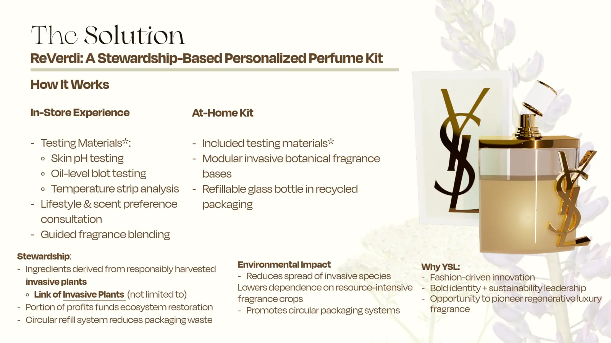
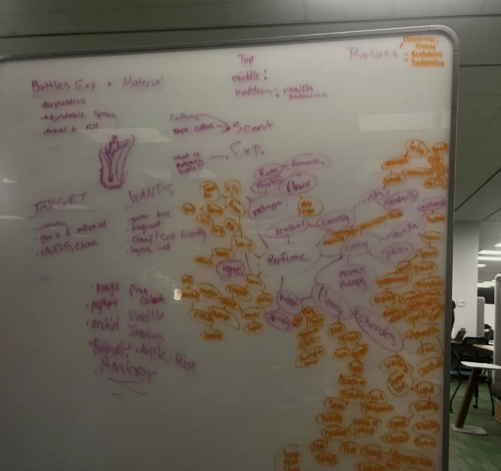
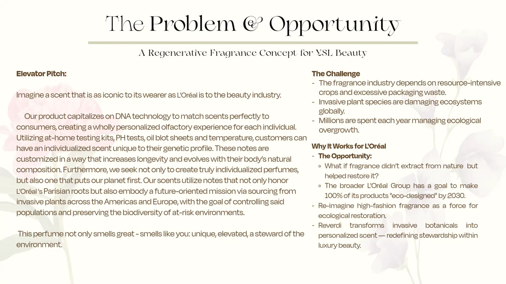
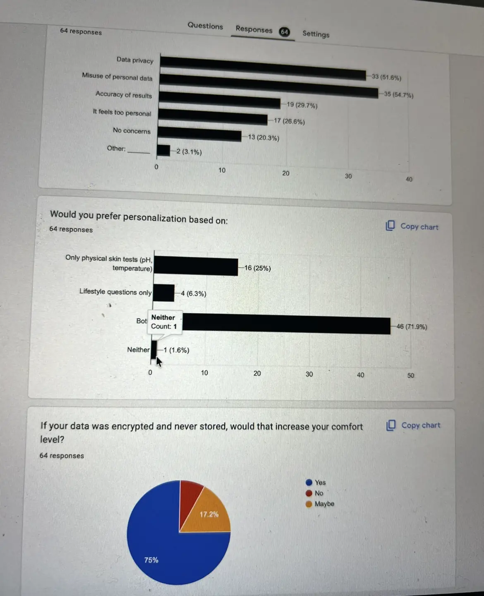
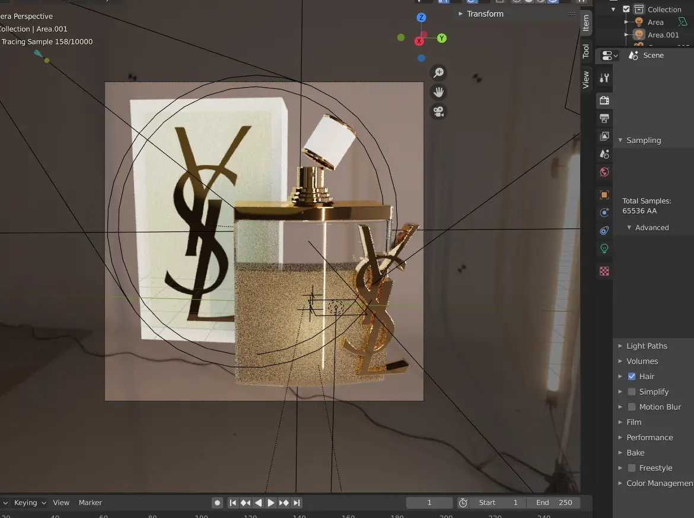
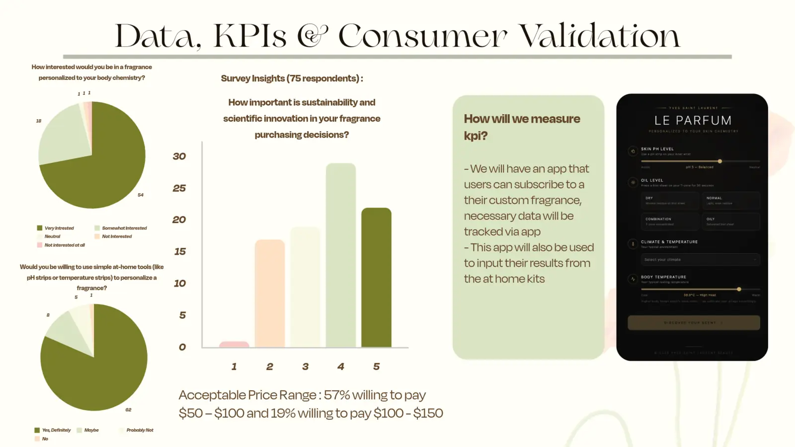

A personalized perfume kit that turns invasive plant species into custom scent, developed with Team Cré for L’Oréal Brandstorm 2026 and pitched live to L’Oréal judges.

As UX designer and coordinator for Team Cré, I organized our research, turned survey results into product requirements, and shaped the concept into a pitch we delivered live to L’Oréal industry judges, placing competitively against university teams nationwide.
We began by mapping everything a fragrance could be. Starting from the word “perfume,” the board branched into feelings, notes, ingredients, culture, and packaging, while side lists tracked our target audience, what they want, and materials for bottles and refills.

Two threads kept surfacing: people want scent that feels personal, and they increasingly care where ingredients come from. The concept lived where those two threads crossed.
The fragrance industry depends on resource-intensive crops and heavy packaging, while invasive plant species damage ecosystems and cost millions to manage each year. ReVerdi connects those problems: responsibly harvested invasive botanicals become the base notes of a personalized scent, and part of every sale funds ecosystem restoration.

We chose YSL Beauty for its fashion-driven innovation and bold identity, a brand that could credibly lead regenerative luxury fragrance.
Personalization was the riskiest assumption. Our concept asked customers to use pH strips, oil blots, and temperature strips, then share the results through an app. I designed a survey to test interest, willingness to use at-home tools, price tolerance, and privacy comfort.
were very or somewhat interested in a fragrance matched to their body chemistry
would pay $50–$100; another 19% would pay $100–$150
would feel more comfortable if data were encrypted and never stored

The privacy questions changed the product. Misuse of personal data and data privacy were the top concerns, and most people preferred personalization based on both physical skin tests and lifestyle questions. That pushed us toward a design where results stay on the customer’s side and only the formula is shared.
The visit starts with the body and ends with a scent made for it.
Testing continues at home, and the bottle is built to be refilled instead of replaced.
Results stay on the customer’s side and only the formula is shared, a direct result of the privacy survey.


Judges needed to picture a YSL product, not a sketch. We modeled and lit the refillable bottle in Blender so the pitch could show material, weight, and finish.
My last job was turning months of notes and 75 survey responses into a narrative that fit the time limit: the problem, the opportunity for L’Oréal, how ReVerdi works, and the evidence that people want it. We delivered the pitch live to L’Oréal industry judges.
Brandstorm was my first time leading research inside a team under a hard deadline. Keeping everyone working from the same evidence mattered as much as any screen. If we took ReVerdi further, I would prototype the at-home kit with real testers to see whether the skin tests feel fun or clinical, and design the app’s privacy controls as carefully as the bottle.